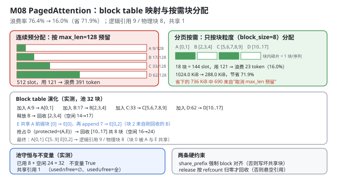
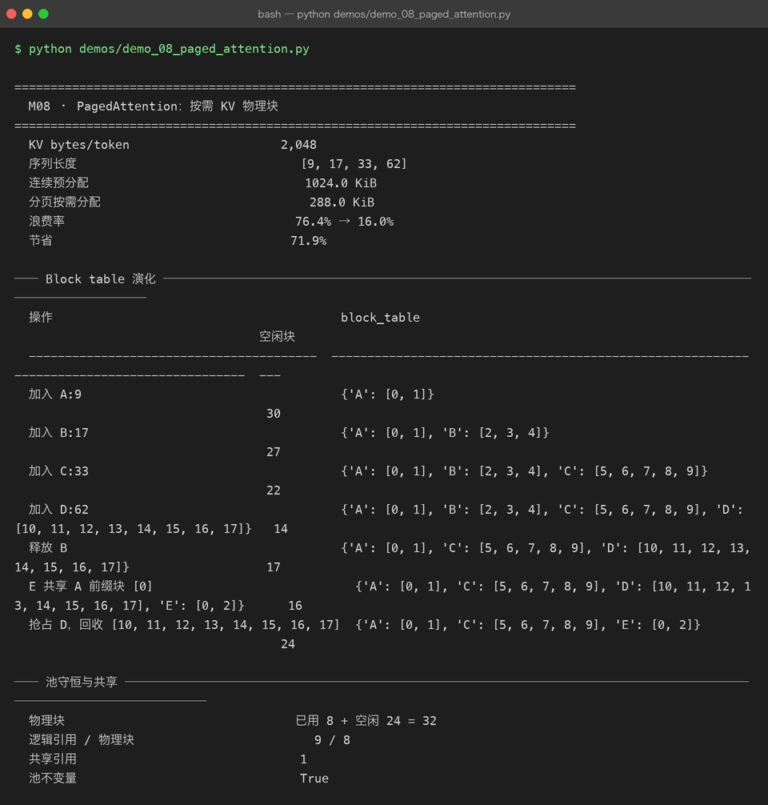

Milestone 08 — PagedAttention：按需分配 KV 物理块
M07 证明了 KV Cache 能省掉重复计算（实测 2.20×）。但 KV Cache 引入了一个新问题：它要占显存，而且占多少事先不知道。
朴素做法是"按 max_seq_len 给每条序列预留一整块连续显存"。这个做法有三种浪费：
| 浪费类型 | 具体表现 | 后果 |
|---|---|---|
| 内部碎片 | 序列实际长 9，却预留了 128 | 每条序列浪费 (max_len − 实际长度) |
| 预留浪费 | 到底会生成多长，请求进来时不知道 | 只能按最坏情况预留 |
| 无法共享 | 两条序列有相同前缀（system prompt、few-shot），各存一份 | 前缀重复存储 |
PagedAttention 的解法来自操作系统：把 KV Cache 切成固定大小的物理块（block），用一张 block table 把"逻辑第 i 块"映射到"某个物理块"，按需分配。
纯 numpy 手写：块池、block table、引用计数、前缀共享、抢占、不变量检查，全部自己实现（src/ie/paged.py）。不引入 vLLM。
1. Why：为什么"分页"能同时解决三件事
内部碎片：浪费从"预留长度 − 实际长度"降到"块大小 − (实际长度 mod 块大小)"，上限是 1 个块。
预留浪费：不需要预留 —— 生成一个 token 就申请一个 slot，块满了再申请下一个块。显存占用随实际生成长度线性增长，而不是按最坏情况一次性占满。
前缀共享：两条序列的相同前缀可以指向同一个物理块，靠引用计数（refcount）管理生命周期。这是连续分配根本做不到的 —— 连续内存里两个序列的前缀必须在两个不同的地址。共享带来的收益在多轮对话、长 system prompt、beam search 场景下极其可观。
代价要说清楚：注意力 kernel 不能再假设 K/V 是连续的，必须按 block table 做 gather。这是 PagedAttention 唯一的性能代价，也是为什么真实实现需要专门的 CUDA kernel。
2. Design：块池 + block table + refcount
class PagedKVCache:
blocks # (num_blocks, block_size, token_bytes) 物理块池
free_blocks # 空闲块号列表
block_table # request_id -> [物理块号, ...] 逻辑块 i → 物理块
lengths # request_id -> 已存 token 数
refcounts # 每个物理块被多少个请求引用核心操作：
| 操作 | 行为 |
|---|---|
append(id, n) | 按需取块，写入 token 位；physical = table[logical]，offset = pos % block_size |
share_prefix(src, tgt, n) | 复制 src 的前 n/block_size 个块号，refcounts[block] += 1 |
release(id) | 逐块 refcounts -= 1，归 0 才真正回池（并 fill(0) 清零） |
preempt(protected) | 选"块数最多、长度最长"的请求释放，回收它的块 |
check_invariants() | 五条池不变量（见 4.4） |
地址换算就是两个除法 —— 这是整个设计的精髓：
logical, offset = divmod(token_position, block_size)
physical = block_table[request_id][logical]
# 真实数据在 blocks[physical, offset]
3. Real-run evidence（来自 demos/out/demo_08_paged_attention_terminal.txt）
配置：KV bytes/token = 2,048（2 × layers=2 × heads=4 × head_dim=16 × dtype_bytes=8），num_blocks=32，block_size=8，max_seq_len=128，四条序列长度 [9, 17, 33, 62]。
3.1 显存账（实测）
KV bytes/token 2,048
序列长度 [9, 17, 33, 62]
连续预分配 1024.0 KiB
分页按需分配 288.0 KiB
浪费率 76.4% → 16.0%
节省 71.9%拆解（按公式还原）：
| 口径 | 计算 | 结果 |
|---|---|---|
| 有效 token | 9+17+33+62 = 121 × 2,048 B | 242 KiB |
| 连续预分配 | 4 × 128 × 2,048 B | 1,024 KiB（浪费 782 KiB，76.4%） |
| 分页按需 | (2+3+5+8) 块 × 8 × 2,048 B | 288 KiB（浪费 46 KiB，16.0%） |
| 节省 | 1 − 288/1024 | 71.9% |
分页后剩余的 46 KiB 浪费，全部来自"每条序列最后一块没填满"：A 用 9/16、B 17/24、C 33/40、D 62/64 —— 合计 23 个空 slot，正是 PagedAttention 理论上限"每条序列浪费 < 1 块 × 序列数"的体现。
3.2 Block table 演化（实测全量）
操作 block_table 空闲块
---------------------------------------- ------------------------------------------------------------------------------------------ ---
加入 A:9 {'A': [0, 1]} 30
加入 B:17 {'A': [0, 1], 'B': [2, 3, 4]} 27
加入 C:33 {'A': [0, 1], 'B': [2, 3, 4], 'C': [5, 6, 7, 8, 9]} 22
加入 D:62 {'A': [0, 1], 'B': [2, 3, 4], 'C': [5, 6, 7, 8, 9], 'D': [10, 11, 12, 13, 14, 15, 16, 17]} 14
释放 B {'A': [0, 1], 'C': [5, 6, 7, 8, 9], 'D': [10, 11, 12, 13, 14, 15, 16, 17]} 17
E 共享 A 前缀块 [0] {'A': [0, 1], 'C': [5, 6, 7, 8, 9], 'D': [10, 11, 12, 13, 14, 15, 16, 17], 'E': [0, 2]} 16
抢占 D，回收 [10, 11, 12, 13, 14, 15, 16, 17] {'A': [0, 1], 'C': [5, 6, 7, 8, 9], 'E': [0, 2]} 24逐行发生了什么：
A:9→ceil(9/8) = 2块；B:17→ 3 块；C:33→ 5 块；D:62→ 8 块。空闲从 32 一路降到 14。- 释放 B：
[2,3,4]回到池里，空闲 14 → 17。 E共享A的前缀块[0]（A的前 8 个 token），然后append(E, 7)→E长度 15 → 需要 2 块，还差 1 块，从池里取到刚回收的 块 2 →E: [0, 2]。块 0 被A和E同时引用，物理上只存了一份。- 抢占
D（protected={"A","E"}）：候选是C和D，D占 8 块最多 → 被选中，回收[10..17]共 8 块，空闲 16 → 24。
3.3 池守恒与共享（实测）
物理块 已用 8 + 空闲 24 = 32
逻辑引用 / 物理块 9 / 8
共享引用 1
池不变量 True- 已用 8 + 空闲 24 = 32：池完全守恒，没有块丢失也没有块重复。
- 逻辑引用 9 / 物理块 8：
A2 +C5 +E2 = 9 条逻辑引用，指向 8 个不同物理块{0,1,2,5,6,7,8,9}—— 多出来的那 1 条就是块 0 的共享引用。这一行是"前缀共享真的生效了"的直接证据。 - 池不变量
True：五条断言全过（见 4.4）。

4. 踩坑 / 反直觉发现
4.1 ⚠ 这是块级账本，不是真实 GPU 显存分配
必须诚实标注：
blocks是一个np.zeros((32, 8, 2048), dtype=np.uint8)的占位数组（约 512 KiB），append只往blocks[physical, offset, 0]写一个position % 256的标记字节。它记录"这个 slot 归谁"，不存真正的 K/V 张量。- 因此
2048 B/token是按架构公式算出来的（2 × 2 × 4 × 16 × 8），不是本机实测的显存占用。 - 同理，M08 的
dtype_bytes=8（fp64，与 P06 模型的 dtype 一致），而 M10 算 7B 时用的是dtype_bytes=2（BF16） —— 两章 dtype 不同，不可直接对比。
所以本章的结论应读作："块分配策略把浪费率从 76.4% 压到 16.0%，节省 71.9%"。这个结论对策略本身成立；具体 KiB 数字是本例参数下的账本结果，不是 7B 上的实测。
4.2 share_prefix 强制要求前缀按完整 block 对齐 —— 这是安全约束不是偷懒
if prefix_tokens % block_size:
raise ValueError("为避免写时复制歧义，共享前缀必须按完整 block 对齐")原因：如果共享了"半个块"，那么 E 往这个块的第 5~8 个 slot 写入自己的 token 时，会直接改到 A 的数据 —— 因为它们是同一块物理内存。
真实 vLLM 的处理是 copy-on-write：共享块被写入时先复制一份再改。本项目选择直接拒绝未对齐的共享，理由：
- 演示的目标是"把共享与引用计数的机制讲清楚"，CoW 会引入大量分支；
- 拒绝比"静默写坏"安全得多 —— 这是一个会静默产生错误结果的操作（和 M07 的
max_len越界同类）。
可迁移的经验：当"部分共享"的正确实现复杂时，先做成显式拒绝。 报错比给错答案好。
4.3 release 必须按 refcount 归零才真回收 —— 否则共享会变成悬空引用
for block in self.block_table.pop(request_id):
self.refcounts[block] -= 1
if self.refcounts[block] == 0: # 只有没人引用了才回池
self.blocks[block].fill(0)
released.append(block)
self.free_blocks.append(block)如果 release(A) 不看 refcount 就把块 0 塞回空闲列表，那么 E 的 block table 里还写着 [0, 2]，而块 0 可能已经被分配给别的请求 —— 悬空引用 + 数据错乱，且不会报错。
实测印证：preempt 时 protected={"A", "E"} 把 A 保护起来，正是因为 E 共享着 A 的块 0。释放共享者之前必须先释放（或保护）被共享者 —— 这个顺序约束是 refcount 机制绕不开的。
4.4 check_invariants 的五条断言 —— 池记账必须有自检
return (
not (used & free) # ① 一个块不能同时是"已用"和"空闲"
and used | free == set(range(self.num_blocks)) # ② 已用 ∪ 空闲 = 全部块（没有丢失）
and used == tables # ③ 已用集合 == 所有 block_table 引用的块
and len(self.free_blocks) == len(free) # ④ 空闲列表无重复
and np.all(self.refcounts >= 0) # ⑤ refcount 不为负
)实测全部通过（True）。第 ② 条最重要：它保证"块池守恒"，也就是终端里那行"已用 8 + 空闲 24 = 32"。
这类自检在分配器代码里是必需品。块泄漏（分配了没释放）和块重复释放（同一块进了两次空闲列表）都不会立刻崩溃，只会在几百个请求之后表现为"显存不足"或"数据错乱"—— 到那时已经无法定位。
4.5 block_size 是个真实的权衡（按同一公式推算）
本章用 block_size=8，vLLM 默认 16。用同一批序列长度 [9, 17, 33, 62] 推算：
| block_size | 分配 slot | 内部碎片 | block table 条目数 |
|---|---|---|---|
| 8 | 144 | 23 token（16.0%） | 18 |
| 16 | 160 | 39 token（24.4%） | 10 |
块越小越省显存，但 block table 越长（调度和 kernel launch 的开销越大）。
本例选 8 有两个原因：一是让碎片对比更明显（16.0% vs 76.4%），二是池只有 32 个块，块号要在终端里看得清。
注意：这张对比表是按公式推算的，不是本章 demo 的实测输出（demo 只跑了
block_size=8）。
4.6 分页省下的 71.9% 里，绝大部分是"不再按 max_len 预留"
拆开看：连续预分配浪费 782 KiB，分页浪费 46 KiB，省下的 736 KiB 里只有 46 KiB 是"块内碎片"的改善，其余 690 KiB 全部来自"不再按 max_seq_len=128 预留"。
也就是说：PagedAttention 最大的收益不是"分块"这个动作本身，而是"按需分配"这个语义。 分块只是让按需分配在注意力 kernel 里可行的手段。
这条很容易被讲反。如果只把 max_seq_len 从 128 调小到 64，连续预分配也能省一半 —— 但那样就得拒绝所有超过 64 的请求，而分页不需要做这个妥协。
5. Conclusion
- PagedAttention = 固定大小物理块 + block table 映射 + 按需分配，地址换算就是
divmod(pos, block_size)。 - 实测（4 条序列
[9,17,33,62]、max_len=128、block=8、2,048 B/token）：连续预分配 1024.0 KiB（浪费 76.4%）→ 分页 288.0 KiB（浪费 16.0%），节省 71.9%。 - 分页后剩余的 16.0% 浪费全部来自"每条序列最后一块没填满"（23 个空 slot），正是理论上限"每条 < 1 块"的体现。
- 前缀共享实测生效：
E共享A的块 0 → 逻辑引用 9 / 物理块 8，共享引用 1。 - 池守恒：已用 8 + 空闲 24 = 32；五条不变量全部
True。 - ⚠ 诚实标注：这是块级账本，不是真实 GPU 分配 ——
blocks是uint8占位数组，2,048 B/token 按公式算出；且本章dtype_bytes=8（fp64）与 M10 的 BF16（2）不可直接对比。 share_prefix强制 block 对齐（避免写坏共享块；真实实现用 CoW）；release按 refcount 归零才回收（否则悬空引用）；preempt必须protected住被共享者。- 分页最大的收益是"按需分配"语义，不是"分块"动作本身（省下的 736 KiB 里 690 KiB 来自取消
max_len预留）。 - 手写实现的意义：因为块池、refcount、不变量都是自己的代码，我能把"共享到底省了几块"打印成一个数字（
逻辑引用 9 / 物理块 8）—— 用 vLLM 只能看到GPU blocks: 32这类聚合指标。
6. Code map
| 文件 | 职责 |
|---|---|
src/ie/paged.py | PagedKVCache：allocate / _take_blocks / append（按需取块 + token 位写入）/ share_prefix（refcount++，强制 block 对齐）/ release（refcount--，归零才回池并清零）/ preempt（选块数最多者，protected 保护被共享者）/ physical_block（divmod 地址换算）/ stats（用量与碎片率）/ check_invariants（五条池不变量） |
src/ie/paged.py:66 | if prefix_tokens % block_size: raise ValueError(...) —— 未对齐共享显式拒绝 |
src/ie/paged.py:81 | if self.refcounts[block] == 0: —— refcount 归零才真正回收 |
src/ie/paged.py:143 | memory_comparison：连续 vs 分页的浪费率与节省率 |
demos/demo_08_paged_attention.py | 3 节：显存账对比 / block table 演化 / 池守恒与共享 |
demos/out/demo_08_paged_attention_terminal.txt | 本章所有数字的来源 |
assets/paged-attention.svg | 本章 block table 与块分配图 |
7. Version line
v0.7 → v0.8，M08 PagedAttention 落地。实测（4 条序列 [9,17,33,62]、max_len=128、block_size=8、池 32 块、2,048 B/token）：连续预分配 1024.0 KiB（浪费 76.4%）vs 分页 288.0 KiB（浪费 16.0%），节省 71.9%；block table 完整演化（A:9→[0,1]、B:17→[2,3,4]、C:33→[5..9]、D:62→[10..17]、释放 B 回收 3 块、E 共享 A 前缀块 [0] 后为 [0,2]、抢占 D 回收 8 块）；池守恒 已用 8 + 空闲 24 = 32，逻辑引用 9 / 物理块 8，共享引用 1，五条不变量 True。并诚实记录「⚠ 块级账本非真实 GPU 分配，blocks 为 uint8 占位、2,048 B/token 按公式算出；本章 dtype_bytes=8（fp64）与 M10 的 BF16 不可直接对比」「分页最大收益是按需分配语义而非分块动作（736 KiB 中 690 KiB 来自取消 max_len 预留）」「share_prefix 强制 block 对齐、release 按 refcount 归零才回收」。纯 numpy、无 vLLM。配图 1 张手写 SVG + 1 张真实终端截图。